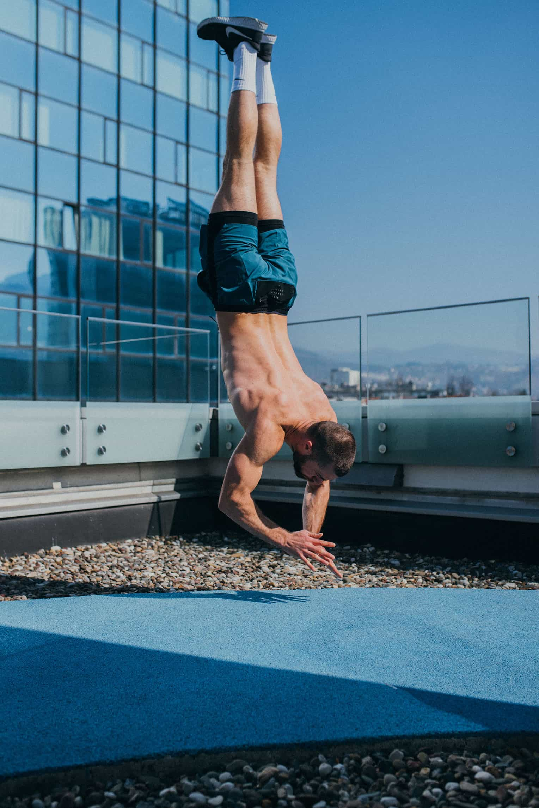

Otkrij tačno šta se dešava u tvom tijelu — 5 pitanja, personaliziran profil kretanja, besplatno.
5 pitanja. Personaliziran profil kretanja koji objašnjava tačno šta se dešava u tvom tijelu — i šta sa tim uraditi.
Korak 1 od 5
Ti nisi osoba koja se predaje. Ali tvoje tijelo plaća cijenu.
“Vidio sam stotine klijenata koji su godinama trošili novac na fizioterapiju, lijekove i pauze — i bol bi se vratio. Razlog je uvijek isti: liječili su gdje boli, ne zašto boli. Biomehanika mijenja tu jednažbu.”
— Ilhan, Stingray
Za 2 mjeseca — DUGOGODIŠNJIH bolova u koljenu i leđima NEMA. Niko nije vjerovao, ni ja sam. Ali metoda radi.
Ilhan je jedan od rijetkih trenera na Balkanu koji pristupa tijelu kao sistemu. Sa 64,000+ pratilaca i godinama rada s klijentima koji su prošli kroz fizioterapiju, operacije i bezbroj programa bez trajnog rezultata — izgradio je metodologiju zasnovanu na jednom principu: tijelo koje se pravilno kreće ne boli. Nije fitnes trener. Nije fizioterapeut. Ilhan je specijalista biomehanike kretanja — i to je razlika koja mijenja sve.
15 minuta. Video poziv. Bez obaveze.
Zakaži besplatnu procjenu →Besplatno • Online • 15 minuta
Nema jake boli. Ali nešto nije u redu — i ti to osjećaš.
“Najsretniji sam kada vidim klijente koji dođu u ovoj fazi. Još nema velike boli. Još je sve rješivo relativno brzo. Ti si napravio pravu odluku dolazeći sada.”
— Ilhan, Stingray
Nakon 7 dana bolovi u vratu i ramenima su nestali.
Ilhan je jedan od rijetkih trenera na Balkanu koji pristupa tijelu kao sistemu. Sa 64,000+ pratilaca i godinama rada s klijentima koji su prošli kroz fizioterapiju, operacije i bezbroj programa bez trajnog rezultata — izgradio je metodologiju zasnovanu na jednom principu: tijelo koje se pravilno kreće ne boli. Nije fitnes trener. Nije fizioterapeut. Ilhan je specijalista biomehanike kretanja — i to je razlika koja mijenja sve.
15 minuta. Video poziv. Bez obaveze.
Zakaži besplatnu procjenu →Besplatno • Online • 15 minuta
Treniraš. Trudiš se. Ali negdje između napora i rezultata — nešto se gubi.
“Svim klijentima, bez izuzetka, nalazim iste stvari: postoje pokreti koje njihovo tijelo ne zna napraviti korektno — i to ih košta performanse. Kad to ispravimo, napredak je brz i mjerljiv.”
— Ilhan, Stingray
Počeo sam sa Stingrayom zbog performansi, ne bola. Za 3 mjeseca poboljšao sam sve metrike — snagu, brzinu, oporavak.
Ilhan je jedan od rijetkih trenera na Balkanu koji pristupa tijelu kao sistemu. Sa 64,000+ pratilaca i godinama rada s klijentima koji su prošli kroz fizioterapiju, operacije i bezbroj programa bez trajnog rezultata — izgradio je metodologiju zasnovanu na jednom principu: tijelo koje se pravilno kreće ne boli. Nije fitnes trener. Nije fizioterapeut. Ilhan je specijalista biomehanike kretanja — i to je razlika koja mijenja sve.
15 minuta. Video poziv. Bez obaveze.
Zakaži besplatnu procjenu →Besplatno • Online • 15 minuta
Nema boli. Nema problema. Ali znaš da prevencija vrijedi više od liječenja.
“Ovo je pristup koji bih volio da svi imaju. Ne čekati da nešto zaboli. Razumjeti kako tvoje tijelo funkcioniše sada — i osigurati da nastavi funkcionisati onako kako treba.”
— Ilhan, Stingray
Počeo depresivan od bolova. Sada bez ikakvih bolova.
Ilhan je jedan od rijetkih trenera na Balkanu koji pristupa tijelu kao sistemu. Sa 64,000+ pratilaca i godinama rada s klijentima koji su prošli kroz fizioterapiju, operacije i bezbroj programa bez trajnog rezultata — izgradio je metodologiju zasnovanu na jednom principu: tijelo koje se pravilno kreće ne boli. Nije fitnes trener. Nije fizioterapeut. Ilhan je specijalista biomehanike kretanja — i to je razlika koja mijenja sve.
15 minuta. Video poziv. Bez obaveze.
Zakaži besplatnu procjenu →Besplatno • Online • 15 minuta
Za 2 mjeseca — DUGOGODIŠNJIH bolova u koljenu i leđima NEMA.
Nakon 7 dana bolovi u vratu i ramenima su nestali.
Počeo depresivan od bolova. Sada bez ikakvih bolova.
Analiziramo tvoju posturu i biomehaniku. Otkrivamo tačan uzrok bola — ne samo gdje boli, nego zašto.
4K video vodiči, sedmični plan, stalna podrška. Sve prilagođeno tebi i tvom tijelu.
Mjesečni pozivi i testovi, mjerljivi rezultati. Vidiš promjenu — brojevima, ne nadom.
Teretana nije nužna. Lokacija nije bitna. Radiš gdje god si.
Ne. Program je dizajniran da radiš kod kuće, u parku, na putovanju — bilo gdje. Sve što ti treba je tvoje tijelo i volja za promjenom.
Većina klijenata osjeća značajno poboljšanje u prvih 30 dana. Neki, poput Stefanija, osjete razliku za samo 7 dana.
Upravo za takve slučajeve je Stingray stvoren. Prilagođavamo program tvom stanju, pažljivo i postepeno, sa fokusom na siguran oporavak.
Kada uporediš sa godišnjim troškom fizioterapije i lijekova — ovo je investicija koja se isplati. Zakaži procjenu i dobit ćeš sve detalje o opcijama i cijenama.
Jedan poziv. 15 minuta. Bez obaveze.
Zakaži besplatnu procjenu →Besplatno • Online • 15 minuta